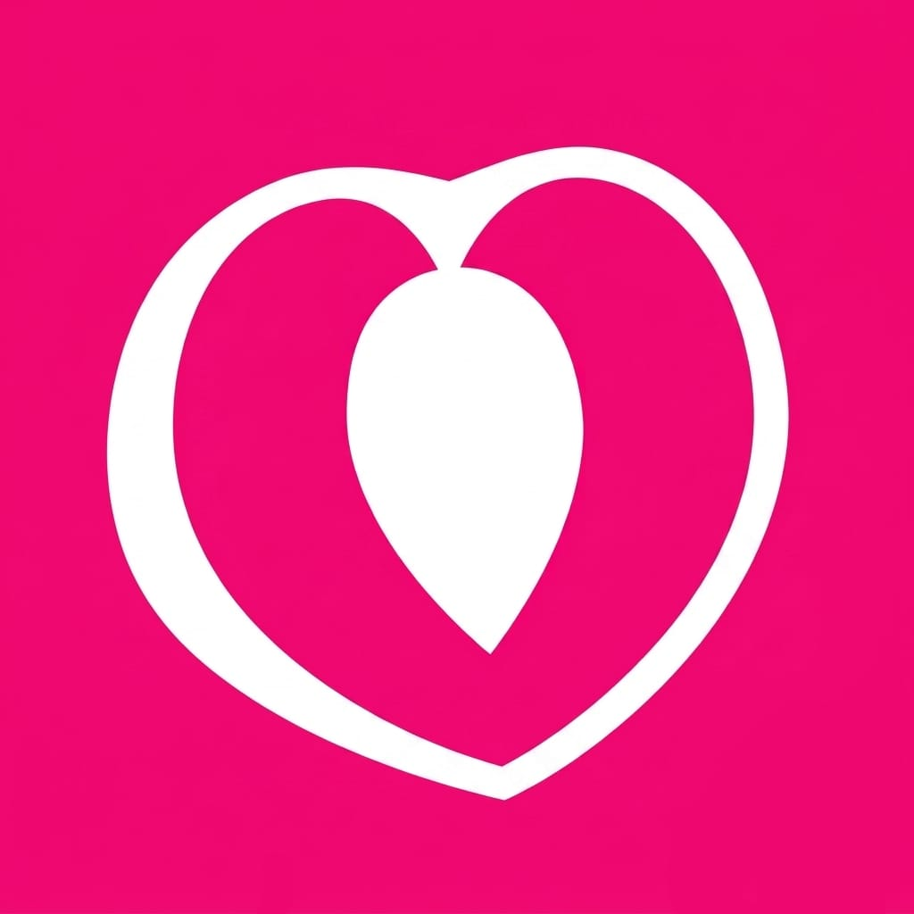

Género: Cambiar
Importa una canción con la voz sola (a cappella o pista de voz separada). Verás el contorno de tonos con la nota más alta y la más baja. Si suenan instrumentos, el detector se confunde. Se analizan hasta 5 minutos.